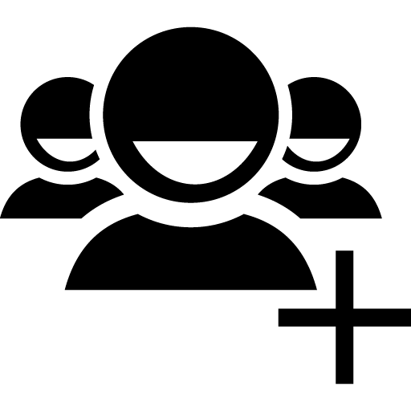

<link rel="import" href="bower_components/polymer/polymer.html">
<link rel="import" href="bower_components/iron-form/iron-form.html">
<link rel="import" href="bower_components/iron-ajax/iron-ajax.html">
<link rel="import" href="bower_components/iron-ajax/iron-request.html">
<link rel="import" href="bower_components/iron-flex-layout/iron-flex-layout-classes.html">
<link rel="import" href="bower_components/iron-icons/iron-icons.html">
<link rel="import" href="bower_components/iron-icon/iron-icon.html">
<link rel="import" href="bower_components/paper-button/paper-button.html">
<link rel="import" href="bower_components/paper-toolbar/paper-toolbar.html">
<link rel="import" href="bower_components/paper-toast/paper-toast.html">
<link rel="import" href="bower_components/paper-input/paper-input.html">
<link rel="import" href="bower_components/paper-styles/paper-styles.html">
<link rel="import" href="bower_components/paper-styles/typography.html">

<dom-module id="sig-add">

		  <template>
					 <style> /* local DOM styles go here */ :host { display: inline-block; width:100%;} iron-icon { fill: rgba(0,0,0,0); stroke: currentcolor; } :host([pressed]) iron-icon { fill: currentcolor; }
					 </style>

					 <style is="custom-style"> 

						.flex-horizontal { @apply(--layout-horizontal); } 
						.flexchild { @apply(--layout-flex); padding-left: 1%;padding-top: 1%; padding-right: 20%;} 

						paper-button.custom {
										  background-color: #7d8ff5;
										  color: white;
										  font-weight: bold;
										  --paper-button-ink-color: var(--paper-pink-a200);
		  								  --paper-button-flat-keyboard-focus: { background-color: var(--paper-pink-a200); color: white !important; };
					  					  --paper-button-raised-keyboard-focus: { background-color: var(--paper-pink-a200) !important; color: white !important; };
											}

						paper-button.custom:hover { background-color: var(--paper-indigo-100); }

						paper-button.pink { color: var(--paper-pink-a200); }

						paper-button.indigo { background-color: #7d8ff5;     color: white; --paper-button-raised-keyboard-focus: { background-color: var(--paper-pink-a200) !important; color: white !important; }; }

						paper-button.green { background-color: var(--paper-green-500); color: white; }

						paper-button.green[active] { background-color: var(--paper-red-500); }

						paper-button.disabled { color: white; }

						#subscriber{padding-top: 5px; width: 58px;}

						#toast-error { --paper-toast-background-color: red; --paper-toast-color: white; }

					 </style>

					 <div class="container flex-horizontal"  >
								<div class="flexchild">
										  <paper-toolbar>
													 
										  </paper-toolbar>
										  <form  is="iron-form"  id="presubmit" method="post" action="http://localhost:8888/ocs/subscriber"  content-type="application/json" >
													 <paper-input name="subscriber" label="Identity" required></paper-input>
													 <paper-input name="password"  label="Secret"required ></paper-input>
													 <paper-input name="attributes" value = "[]"label="Attributes" disabled></paper-input>
													 <paper-input name="balance" type="number" label="Balance (MB)" required> </paper-input>
													 <paper-button raised class="custom indigo" onclick="_submit()" style="float: right; width: 200px;"  >Submit</paper-button>
										  </form>
										  <div id="response-display-container" style="padding-top: 14%;margin-top:16%;">
										  			<paper-toast id="toast-error" class="fit-bottom" >
														<h2> Couldn't add subscriber !</h2>
														<h5> Please recheck the following.</h5>
														<ul>
														<li>Subscriber name only contains characters from 1-9 and A-F</li>
														<li>Password does not include 0, 1, i, l, o characters</li>
														<li>Balance should be a postive number </li>
														</ul>
													</paper-toast>
										  			<paper-toast id="toast-success" class="fit-bottom" >
														<h2> Subscriber added !</h2>
													</paper-toast>
										  </div>
								</div>


								<div></div>

					 </div>


					 <script>

function _submit() {
		  Polymer.dom(event).localTarget.parentElement.submit();
		  console.log("Submitted");
}
					 </script>
		  </template>

		  <script>
Polymer({
		  is: 'sig-add',

		  properties:{},

		  listeners: {
					 'presubmit.iron-form-submit': '_handleFormSubmit',
					 'presubmit.iron-form-error': '_handleFormError',
					 'presubmit.iron-form-response': '_handleFormResponse'
		  },

		  _handleFormSubmit: function() {
					 var form = document.getElementById('presubmit');
					 form.request.headers='{"Content-Type": "application/json"}';
					 form.request.contentType = "application/json";
		  },

		  _handleFormError: function() {
					 var toast = document.getElementById("toast-error");
					 toast.open();
					 toast.duration = 0;
					 toast.fitInto = document.getElementById("response-display-container");
		  },

		  _handleFormResponse: function() {
					 var toast = document.getElementById("toast-success");
					 toast.open();
					 toast.duration = 4;
					 toast.fitInto = document.getElementById("response-display-container");
					 document.getElementById("presubmit").reset();
		  }   
});
		  </script>
</dom-module>
